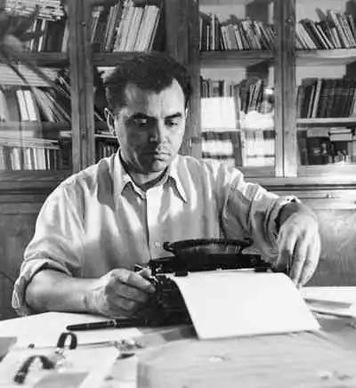
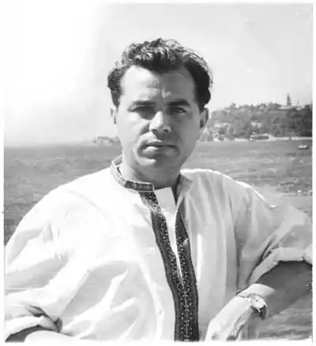
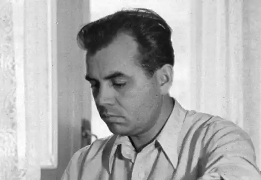

Матвій Шестопал народився 7 листопада 1917 року в селі Мурзинці Звенигородського району на Черкащині. Його покоління — одне з тих, яке винесло на своїх плечах таку важку і криваву ношу війни.
От ще, планида випала! Тільки-но закінчив філологічний факультет Київського державного університету імені Т.Г.Шевченка, в 1941 році, як посунула хрестата танкова орда із Заходу. Відразу — після випускних екзаменів — Матвій потрапив у вир, ні, у м’ясорубку війни.
Ось географія і біографія його долі — фронтові дороги. А на тих дорогах: смерть, каліцтва, жахи Господні, оточення (котли), прориви до своїх, сніги, морози люті, голодне і напівголодне існування... Ржев, Сталінград, Ростов, Нікополь, Миколаїв, Білорусія, Східна Пруссія, Польща, Берлін — берлога фашизму. Від дзвінка до дзвінка на війні: 1941-1945 роки. 1942 року — із самого пекла боїв у Сталінграді — М.Шестопал (капітан-фронтовик) напише листа знаменитому на той час публіцистові Іллі Еренбургу. І там будуть сказані такі крамольні слова: коли скінчиться війна, ми помиємо руки, сядемо за стіл і дамо гідну оцінку всім... хто воював, а хто довів країну до того, що ворог загнав нас аж до Волги. І.Еренбург опублікує листа в книзі "Люди, годы, жизнь". Після війни Матвій Михайлович буде працювати в пресі, у видавництві "Молодь" (головний редактор), а в 1953 році перейде на викладацьку роботу в Київський державний університет імені Т.Г.Шевченка (факультет журналістики). І стане улюбленцем студентів. Згодом партійний Режим круто розправиться з цією талановитою, дивовижною особистістю. Матвію Шестопалу "пришиють" ярлик українського буржуазного націоналіста, і над його головою загримлять страшні громи-перегроми. Відійде він у кращі світи, — де нема Режимів, доносів, кадебе, а є вікова умиротвореність, — 20 серпня 1986 року.